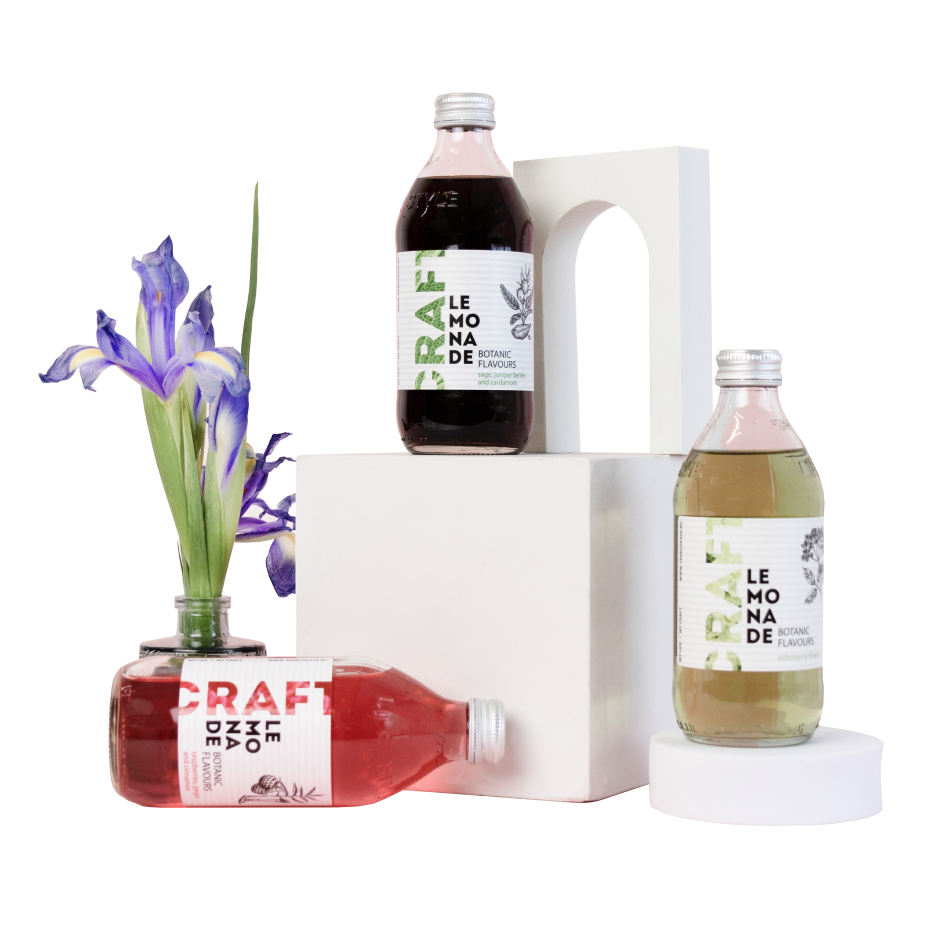

Градус жары повышается с каждым днем и все больше времени хочется
проводить загородом со стаканчиком чего-то прохладненького...
Что же полезного и прохладного выпить летом?

травяной
(шалфей, можжевеловые ягоды, кардамон)
ягодный и пряный
(малина, имбирь и корица)
Тщательно подобранные ботанические ноты в напитках создают тонкий баланс:
цветочный и сладкий
(японская груша и белая хризантема)